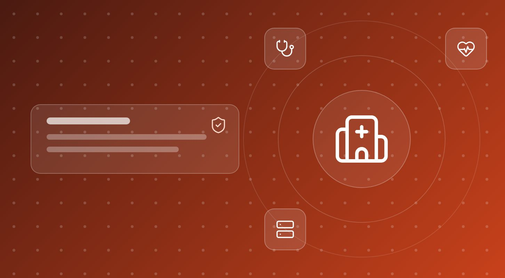
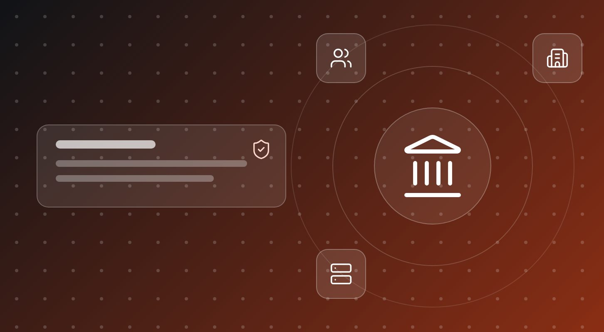

COGNITIV / Escenarios de uso
Cómo se usa COGNITIV en cada sector
Escenarios de despliegue típicos: el problema de partida, cómo lo resuelve COGNITIV y qué cambia. En todos, los datos se quedan dentro de la organización.

Una pregunta que cruza toda la planta
ERP, MES, calidad y mantenimiento consultados a la vez, sin que el secreto de fabricación salga de planta.

Análisis de riesgo auditable, sin exponer datos
Inferencia dentro de la entidad y un registro íntegro de cada decisión, preparado para DORA.

Todo el fondo documental, bajo secreto profesional
Buscar, resumir y redactar sobre los expedientes del despacho sin que ninguno salga de él.

La historia clínica no sale del hospital
IA sobre datos de pacientes dentro del centro, con permisos por rol y trazabilidad, preparada para el Espacio Europeo de Datos Sanitarios.

Servicios a la ciudadanía con soberanía
Atención e informes con IA dentro de la administración, trazables y alineados con el Esquema Nacional de Seguridad.
Son escenarios ilustrativos de despliegue, no referencias de clientes concretos.
¿Su sector no aparece?
Diseñamos el escenario con usted a partir de sus datos y sus sistemas.